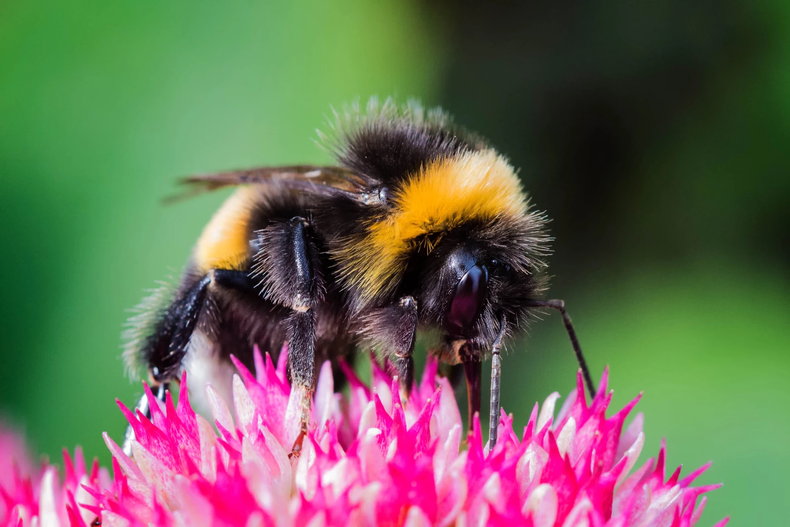

Home
Home Ants
Ants Bees
Bees Beetles
Beetles Butterflies
Butterflies Cockroaches
Cockroaches Flies
Flies Mosquitoes
Mosquitoes Spiders
Spiders Newsletter
Newsletter
Description
All bees have branches hairs somewhere on their bodies and two pairs of wings. Only female bees have stingers (which are modified ovipositors, or organs originally used to lay eggs). Many bee species have black and yellow coloration, but many do not - they come in a variety of colors including green, blue, red, or black. Some are striped and some havea metallic sheen.
They range in size from large carpenter bees and bumble bees to tiny Perdita minima bees, which are less than two millimeters long.
Range
There are over 20,000 bee species worldwide, including the honey bee which originated in Eurasia and has been imported around the globe as a domesticated species. Wild bee species live on every continent except Antarctica. In North America, there are approximately 4,000 native bee species occupying ecosystems from forests to deserts to grasslands.
Source: National Wildlife Federation
Bees
Diet
Bee diets consist exclusively of sugary nectar and protein-rich pollen from flowering plants, unlike the carnivorous wasps from which they evolved.
Behavior
As they forage, bees perform the critical act of pollination. They enter a flower to feed on nectar and gather pollen. Some of the pollen sticks to the bee's body so when the bee leaves and visits another follow, it deposits some of that pollen to the next flower it visits. This causes the flowers to be fertilized, allowing the plant to reproduce and generate the fruits and seeds many other wildlife species rely on as a food source. Bees pollinate a staggering 80% of all flowering plants, including approximately 75% of all fruits, nuts, and vegetables grown in the United States.
Even though all female bees sting, they only do so when threatened. Honey bees, with hives filled with honey and larvae that need protecting, are generally more aggressive and likely to sting when disturbed than solitary native bees.
Conservation
Both domesticated honey bees and many native bee species are in decline. In fact some species, such as the once-common rusty patched bumblebee, are now listed as endangered in the U.S. Potential causes of these declines include habitat destruction, disease, agricultural and lawn and garden practices, use of pesticides, habitat fragmentation, changes in land use, invasive species, and climate change.
Fun Fact
Some species of bee employ a technique called sonication, or buzz pollination, when they harvest pollen. During sonication, the bee rapidly vibrates its flight muscles while attached to the flower. This loosens the pollen, which makes it easier to collect.